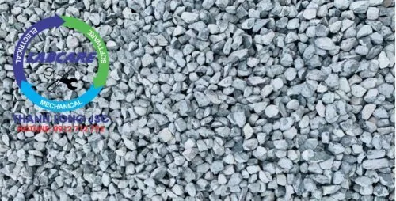
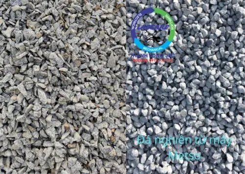
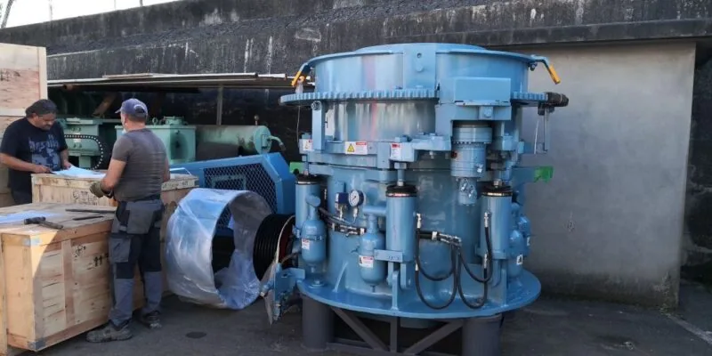
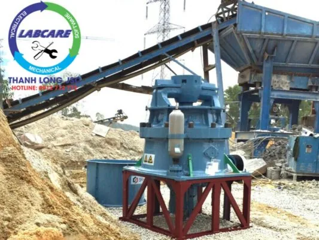

Từ thời nguyên thủy, con người sử dụng đá để xây dựng những công trình bền vững có tuổi thọ lên đến hàng nghìn năm tuổi. Với sự phát triển của khoa học, đá được xem là một vật liệu quan trọng, thiết yếu cho các công trình xây dựng dân dụng và công nghiệp. Với ưu điểm là dễ mua, giá thành rẻ và có tính ứng dụng cao. Các loại đá có thể được sử dụng trong rất nhiều lĩnh vực. Vậy máy nghiền côn Châu Âu có sản xuất được đá xây dựng ? Đá xây dựng là gì? có những loại đá nào, sản xuất đá xây dựng ra sao ?
Dựa vào đặc tính riêng, có thể phân loại đá tự nhiên và đá nhân tạo, được khai thác và sản xuất thành các loại đá xây dựng phù hợp với từng hạng mục công trình.
Các loại đá xây dựng nhờ máy nghiền đá Châu Âu
Đá dăm: Hay còn gọi là đá 0x4. Đá dăm chủ yếu dùng để làm đá cấp phối cho nền đường, dùng để dặm và hoặc làm mới nguyên một tuyến lộ. Ngoài ra người ta còn dùng đá 0x4 để san lấp nền móng nhà, xưởng và các công trình khác.
Đá mi bụi: Là phân loại đá có kích thước nhỏ nhất trong các loại đá xây dựng. Thường được sử dụng làm nguyên liệu cho các sản phẩm sau: Bê tông nhựa nóng, Bê tông xi măng cường độ cao, chất lượng cao. Thành phần của cấp phối đá dăm lớp Base, Subbase.
Đá 1×2: Là một sản phẩm của quy trình nghiền đá hộc. Kích thước đá 1×2 nhiều loại 10x28mm là lớn nhất. Còn có các viên đá nhỏ hơn như 10x16mm, 10x20mm…. Tùy nhu cầu sử dụng của khách hàng, có thể chọn sản phẩm lẫn hoặc sàng lọc theo kích thước chuẩn. Đá 1×2 được dùng để đổ bê tông làm nhà cao tầng, đường băng sân bay, cầu cảng, đường quốc lộ, đặc biệt sử dụng phổ biến tại các nhà máy bê tông tươi hoặc bê tông nhựa nóng, v.v…

Đá mi sàng: Hay còn gọi là đá 3×8, loại đá này là sản phẩm của việc sàng lọc từ các sản phẩm đá khác. Và thường được sử dụng làm chân đế gạch bông, gạch lót sàn. Phụ gia cho công nghệ bê tông đúc ống cống, thi công các công trình giao thông và phụ gia cho các loại VLXD khác .v.v…
Đá 4×6: Sản phẩm đá 4×6 được ứng dụng khá nhiều trong các công trình thi công giao thông, làm nguyên liệu cho công nghệ đúc cống, đế gạch bông, gạch lót sàn…Kích thước sản phẩm gạch này từ 40-60mm.
Đá 5×7: Là sản phẩm được dùng trong làm móng nhà xưởng, công trình chịu lực nén cao. Kích thước đá lớn từ 50-70mm.
Đá hộc: Đá hộc có kích thước từ 100-300mm và không đồng nhất. Có thể viên dày, mỏng khác nhau nên khi sử dụng cần phù hợp. Đá hộc hiện nay được dùng nhiều trong thi công xây tường rào.

Máy nghiền côn Châu Âu là gì ? có sản xuất được đá xây dựng ?
Từ những năm 1960, các nước Châu Âu dần tập trung sản xuất các loại máy nghiền côn như các dòng máy SC, SG và SCH của từ nhà sản xuất là các loại máy phổ biến nhất trên thế giới. Một chiếc máy xuất sắc đã được thử nghiệm trong hàng nghìn ứng dụng khai thác mỏ, khai thác công nghiệp và khai thác đá.
Máy nghiền côn lò xo bán thủy lực SC

Là một loại máy nghiền côn mới được phát triển và sản xuất bởi SRH dựa trên công nghệ tiên tiến và những cải tiến mới so với các máy nghiền côn lò xo Symons nổi tiếng thế giới.
Đặc điểm sản phẩm
– Hiệu suất, hoạt động ổn định, Sản lượng đều.
– Chất lượng sản phẩm đạt chuẩn.
– Chi phí bảo trì, bảo dưỡng thấp.
– Ứng dụng linh hoạt.
– Dễ dàng sửa chữa, bảo dưỡng.
Máy nghiền côn thuỷ lực SG

Máy nghiền côn thủy lực dòng SG là loại máy nghiền côn kiểu mới, dưới đáy của thiết bị được trang bị hệ thống thủy lực xi lanh đơn (single cylinder) sản xuất. Máy nghiền côn thuỷ lực dòng SG được nghiên cứu và sản xuất cải tiến nhiều so với máy nghiền côn kiểu cũ. Thanh Long JSC là đại diện duy nhất từ thương hiệu nhà sản xuất SRH. Cung cấp rất nhiều ở các mỏ Bình Dương, Bình Phước Huế. Bình Thuận, Ninh Thuận, Quảng Nam, và 1 số khu vực phía Bắc, … Zalo, hotline: 0912 712 772
Đặc điểm sản phẩm
-
Hiệu suất cao:
Máy nghiền côn SG là sự kết hợp hoàn hảo tần suất rung với sự va đập và hình dáng khoang nghiền, điều này giúp tăng mật độ vật liệu trong khoang nghiền. Vật liệu trong khoang nghiền được nghiền dưới tác dụng của lực xung kích. Áp lực của côn nghiền cho ra sản phẩm vừa nhỏ vừa đẹp giúp tăng hiệu quả nghiền.
-
Vật liệu trong khoang nghiền
Trải qua 3-5 lần nghiền, nâng cao hiệu suất nghiền của vật liệu.
-
Sản lượng cao
Mật độ trong khoang nghiền tăng cao giúp gia tăng hiệu quả nghiền. Đối với vật, tăng tỷ lệ thành phẩm.
Thiết kế khoang cân đối, giúp kích thước cửa cấp liệu không thay đổi nhiều. Cỡ hạt cấp liệu lớn nhất, cũng không thay đổi cả trong quá trình tấm lót bị mài mòn.
Vật liệu được nghiền nhiều hơn, công suất cao hơn.
-
Chất lượng sản phẩm hoàn hảo hơn:
Mật độ vật liệu trong khoang nghiền tăng cao, giúp máy nghiền côn thuỷ lực dòng SG tận dụng được nguyên lý hoạt động kiểu “nghiền áp tầng” giúp cho hạt ra đồng đều hơn, gọn đẹp. Từ đó nâng cao giá trị sản phẩm.
-
Vận hành bình thường, giá thành sửa chữa, bảo dưỡng thấp
Thiết kế bảo vệ trục chính có thể thay thế giúp trục chính được bảo vệ.
Trang bị hệ thống bảo vệ tự động khi quá tải. Hệ thống điều khiển thủy lực giúp nhanh chóng điều chỉnh cửa liệu ra.
Dễ dàng vệ sinh khoang nghiền, có thể thực hiện tốt điều khiển tự động hóa. Từ đó giúp giảm thiểu thời gian ngừng của máy.
-
Ứng dụng linh hoạt
Chỉ cần thay nón côn động, nón côn tĩnh thì khoang nghiền có thể thay đổi.
-
Dễ dàng bảo dưỡng
Thay nón côn động và tĩnh không cần dùng đến chất độn Epoxy. Sau khi thay có thể dùng máy, giảm thiểu thời gian ngừng của máy.
Với chụp lót trục chính có thể điều chỉnh độ lệch tâm. Giúp tối ưu hóa cấp hạt thành phẩm và khả năng sản xuất.
Máy nghiền côn SCH

Là một trong những dòng máy nghiền côn lò xo với nhiều cải tiến hơn so với máy nghiền côn dòng SC. Máy nghiền côn dòng SCH đượ SRH sản xuất, sử dụng rộng rãi trên khắp thế giới tại các mỏ. SC phù hợp cho các dây chuyền nghiền vật liệu xây dựng, khoáng sản.
Máy nghiền đá với nhiều ưu điểm hiện đại như hình dạng khoang đẹp hơn, hoạt động ổn định hơn, hiệu suất cao hơn và chất lượng sản phẩm cao hơn, cũng như chi phí vận hành thấp hơn, ứng dụng linh hoạt hơn và bảo trì dễ dàng hơn.
Quy trình sản xuất đá xây dựng từ máy nghiền côn Châu Âu
Máy nghiền côn Châu Âu không chỉ được dùng trong xây dựng mà còn được ứng dụng rộng rãi trong luyện kim, làm đường, hóa chất, trạm trộn bê tông, gạch không nung block, lót nền đường, nền nhà, san lấp các công trình… Máy nghiền côn thích hợp cho việc nghiền vật liệu có độ cứng trung bình trở lên như:. Quặng sắt, quặng đồng, đá vôi, thạch anh, đá granit, gritstone…
Quy trình sản xuất đá xây dựng
Đá sau khi được nổ mìn, sẽ có những kích cỡ to nhỏ khác nhau. Lúc này cần dùng xe xúc xúc đá lên xe tải, để tiến hành vận chuyển đưa vào các dây chuyền nghiền sàng đá.
Tiếp đến là giai đoạn phân loại đá, đá được đưa vào dây chuyền nghiền sàng đá. Đá hộc có kích thước lớn, được đổ vào phễu cấp liệu. Sau đó được đưa vào thiết bị nghiền mạnh nhất trong dây chuyền là máy kẹp hàm. Máy kẹp hàm có nhiệm vụ nghiền các loại đá có kích thước lớn thành các loại đá nhỏ hơn.
Các viên đá đã được nghiền từ máy kẹp hàm. Được đưa đến máy nghiền côn Châu Âu, thông qua phễu chứa nguyên liệu. Sàng rung phân loại sẽ giúp phân loại các viên đá, được xay ra từ máy nghiền côn. Sàng ra đá có kích thước khác nhau theo yêu cầu của chủ đầu tư, qua các kích thước của lỗ sàng. Đây là bước cần sự tỉ mỉ và độ chính xác cao, vì phải luôn để tâm đến lưới sàng sao cho từng loại đá cần sản xuất.
Nhà sản xuất hàng đầu máy nghiền côn Châu Âu
Thanh Long JSC là đại diện duy nhất từ thương hiệu nhà sản xuất SRH tại Việt Nam
Là thiết bị nghiền số 1 thế giới, với hơn 150 năm đi đầu trong lĩnh vực công nghệ nghiền sàng đá, các trạm nghiền từ thương hiệu nhà sản xuất SRH. được các chủ đầu tư lựa chọn và tin tưởng bởi các yếu tố sau:
- Tiết kiệm điện từ 4000đ/ 1 khối đá đầu ra.
- Vật tư tiêu hao bền hơn 2 lần so với các nhà sản xuất khác, và luôn có sẵn tại kho.
- Hoạt động bền bỉ không dừng máy, chi phí sản xuất thấp
- Hệ thống báo hiệu cảnh báo áp suất, nhiệt độ, khe xả trên màn hiển thị.
- Hệ thống chống kẹt đá, phát hiện kim loại, chống quá tải được tích hợp.
- Đội ngũ kỹ sư tay nghề cao, nhiều kinh nghiệm, đã được đào tạo theo tiêu chuẩn Châu Âu, sẵn sàng xử lý sự cố khi cần.
Thanh Long JSC chuyên cung cấp các sản phẩm dịch vụ về khai thác khoáng sản từ 100 tấn/h đến 2000 tấn/h:
- Dây chuyền nghiền cát/đá cố định: Máy kẹp hàm, máy nghiền côn, sàng rung phân loại, máy nghiền cát nhân tạo VSI, …
- Dây chuyền nghiền cát/đá di động: máy kẹp hàm di động, máy nghiền côn di động, sàng rung phân loại di động, máy nghiền cát nhân tạo VSI di động,..
- Công nghệ rửa/tách:: Máy rửa cát theo module, sàng rung tách nước, máy tuyển rửa cát, máy tách cát mịn, máy thu hồi cát mịn…
- Vật tư, thiết bị phụ tùng: Dao nghiền, lưới sàng, má kẹp hàm, nón côn, …
Các dự án lớn đã lắp đặt dây chuyền tại Việt Nam:
Khánh thành dây chuyền nghiền cát nhân tạo phục vụ cho bê tông
GIAO HÀNG MÁY NGHIỀN CÁT NHÂN TẠO
Cận cảnh máy nghiền hoạt động tại mỏ đá Việt Nam
Lắp đặt trạm nghiền đá và cát xây dựng được nhập khẩu hoàn toàn từ Phần Lan.
Khủng khiếp máy nghiền đá xây dựng lớn nhất Việt Nam
Toàn cảnh dây chuyền nghiền cát nhân tạo tại Việt Nam
Kênh video Youtube:
Page Facebook: Công Nghệ Máy Nghiền Đá
Website: https://thegioimaynghienda.com https://labcare.com.vn/
Zalo, hotline: 0912 712 772
#bn